Flerval och siffra i Buzzys tre vyer
Skiss till #410, gjord direkt i de riktiga vyerna: spelet kördes lokalt och de nya delarna lades in på sidorna. Allt runtomkring är som i dag. Texten i vyerna är på engelska som resten av Buzzy.
Så ser det ut i dag (buzzer)
Utgångsläget. De nya frågetyperna byter bara buzzern, buzzlistan och huvudknappen; sidhuvud, frågekort, timer, liveruta och panelplacering är kvar.
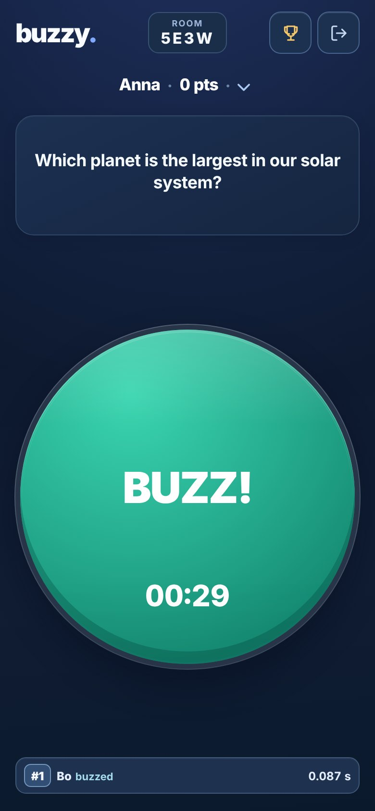
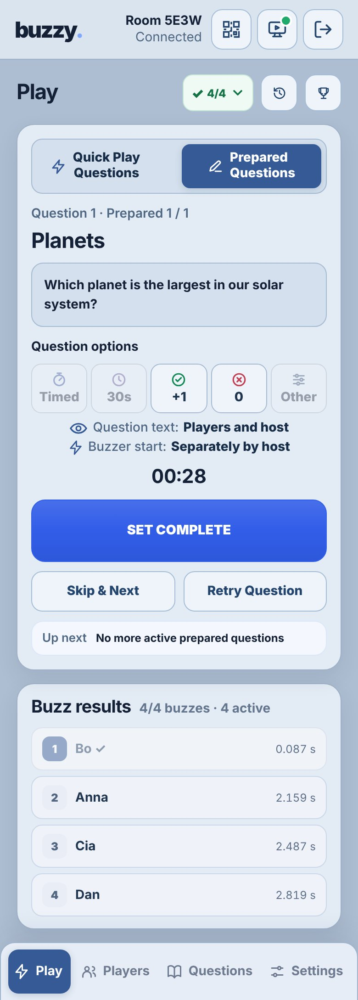
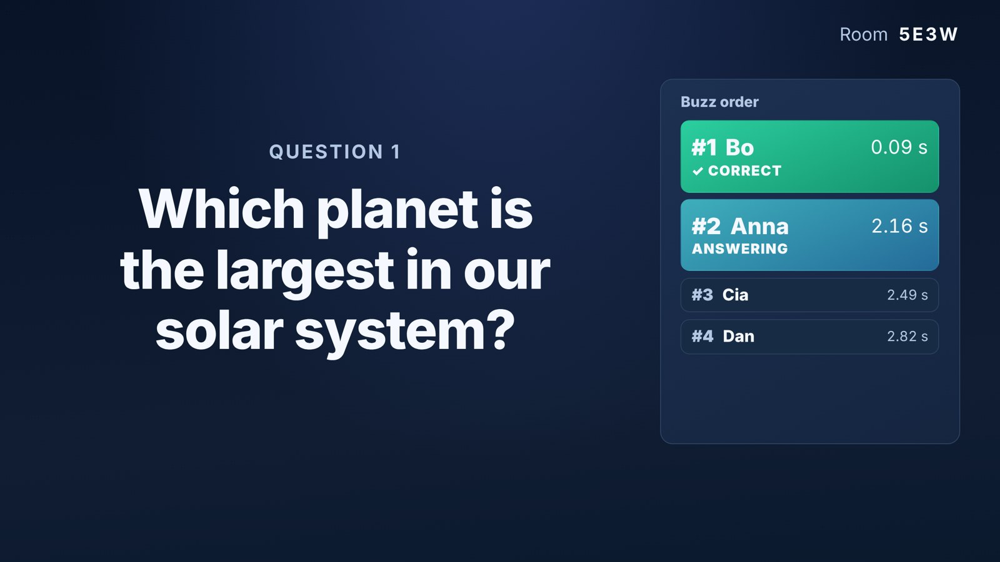
Redigeraren
En väljare Answer type (Buzzer · Multiple choice · Number) med samma glidande väljare som Quick Play/Prepared. Vid flerval ersätts fältet Answer av upp till fem alternativ, där ett markeras som rätt. Vid siffra blir Answer ett talfält med valfri enhet. Poängfälten är kvar och följer rummets standard.
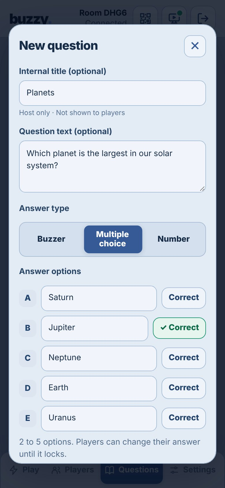
Flerval
Spelare
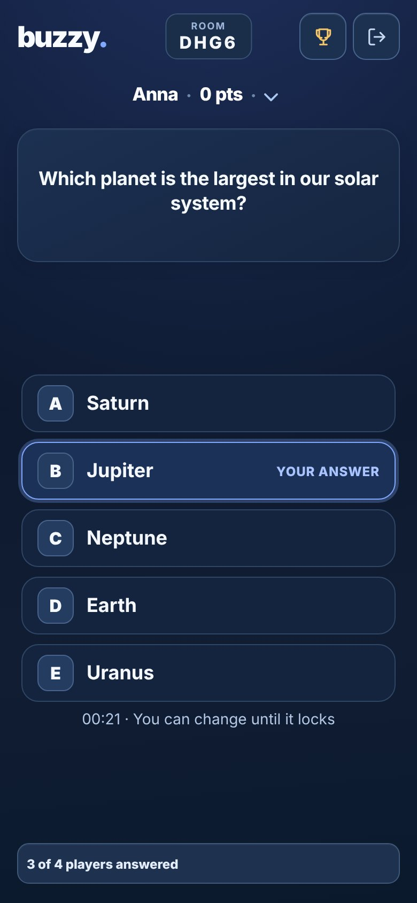
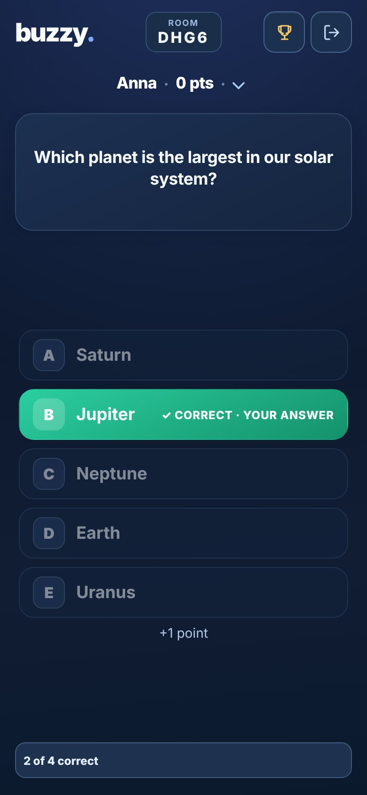
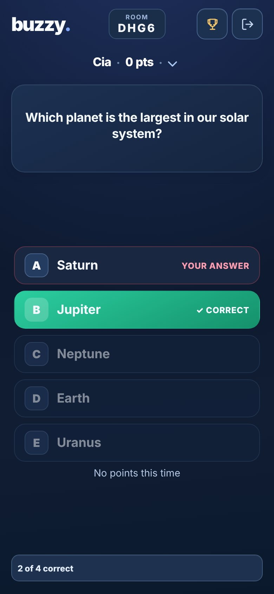
Host
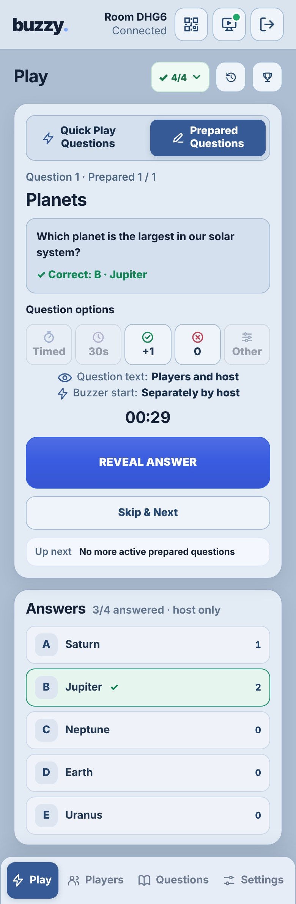
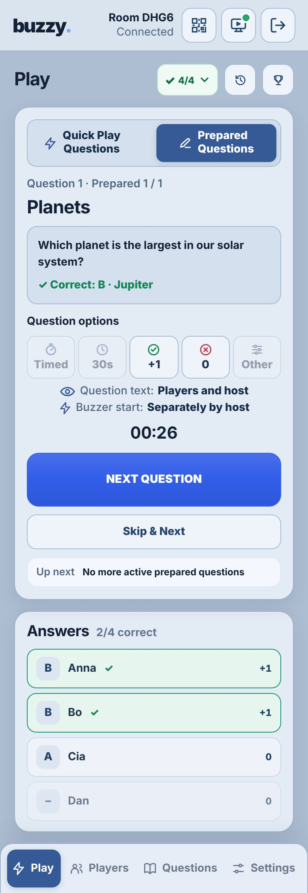
Viewer
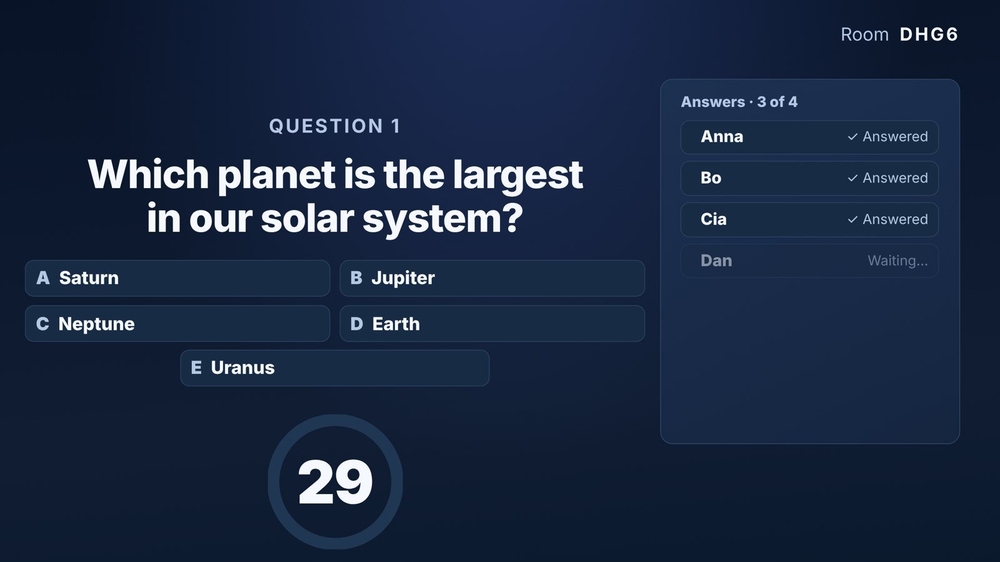
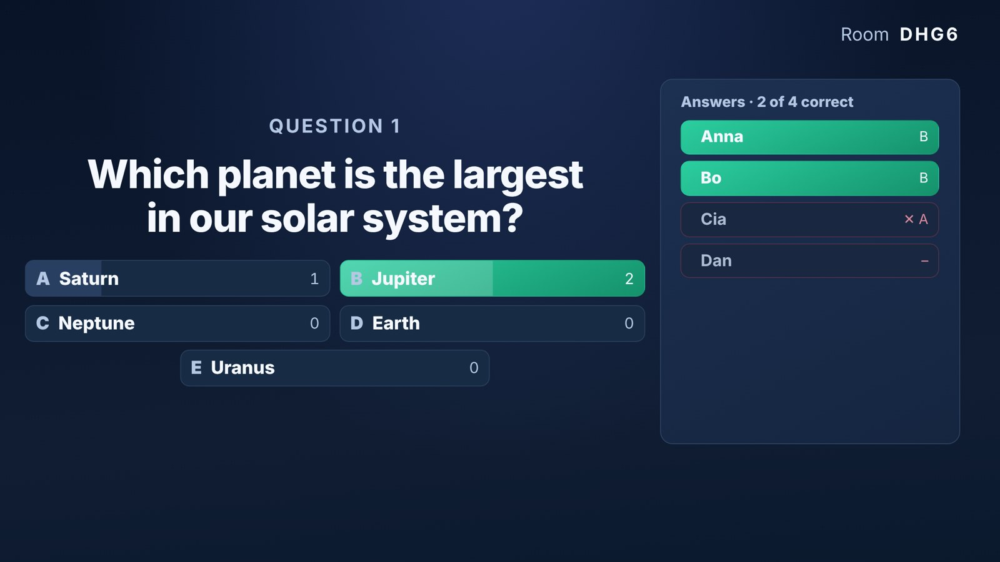
Siffra
Spelare
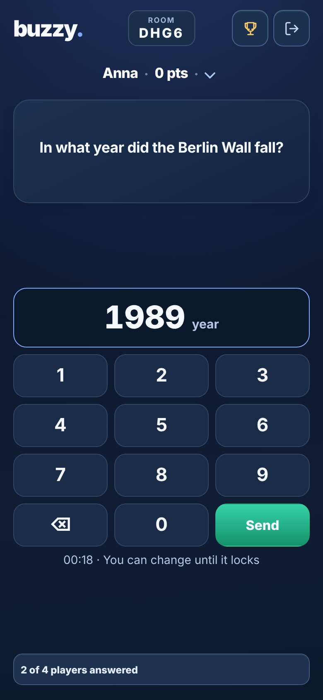
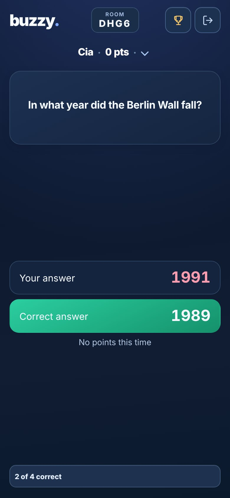
Host
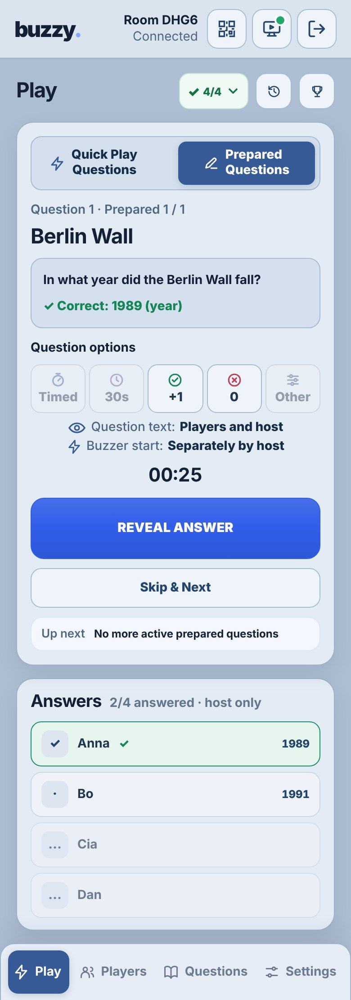
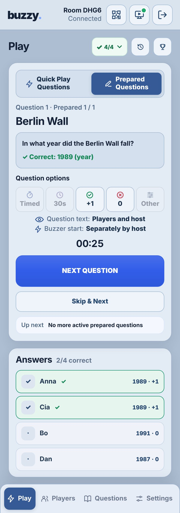
Viewer
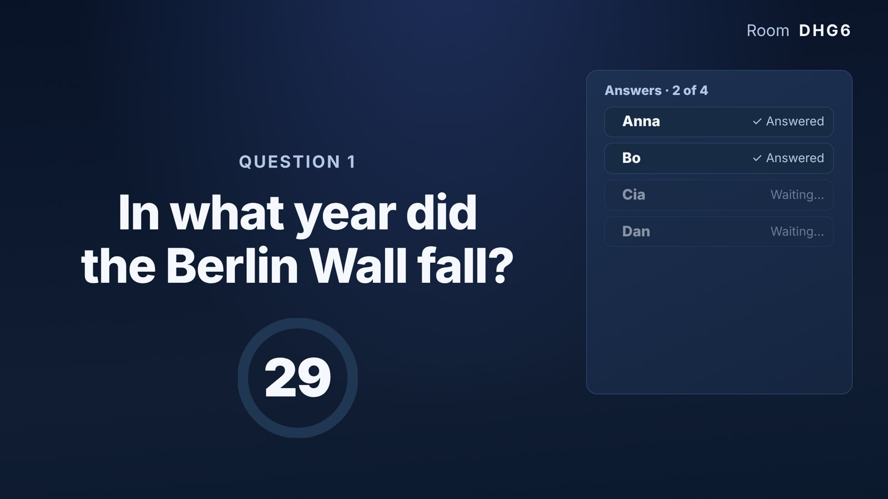
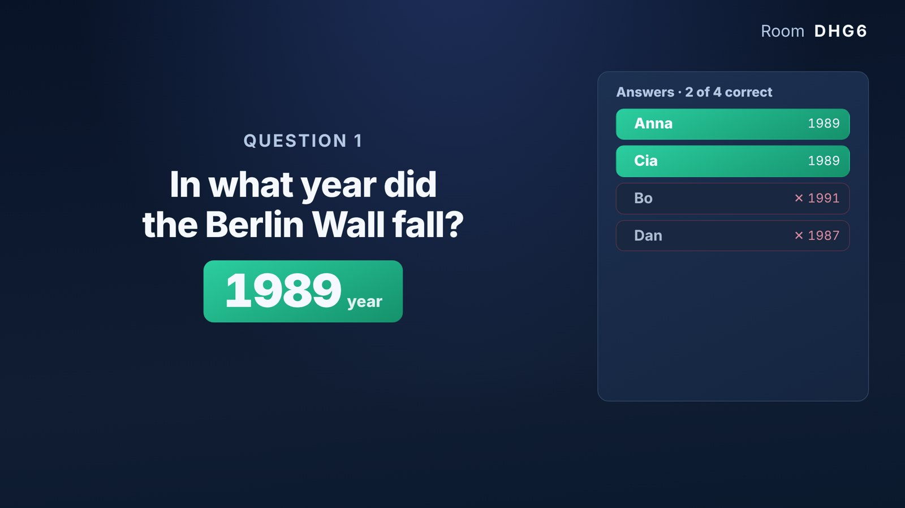
Det som styrs av befintliga inställningar
- Hostens viewerval gäller som i dag: frågetexten (och därmed alternativen), timern, frågenumret och panelen (samma val som buzzordningen).
- Show player names styr om namn syns i panelen.
- Leaderboard, join-skärm och standby är oförändrade och väljs av hosten.
- Poäng följer rummets standard och kan ändras per fråga.